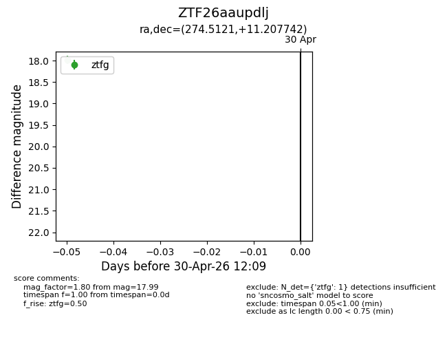
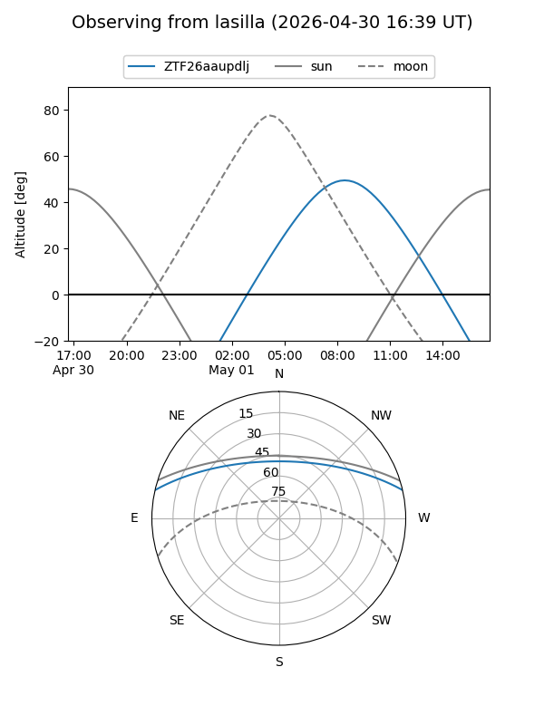
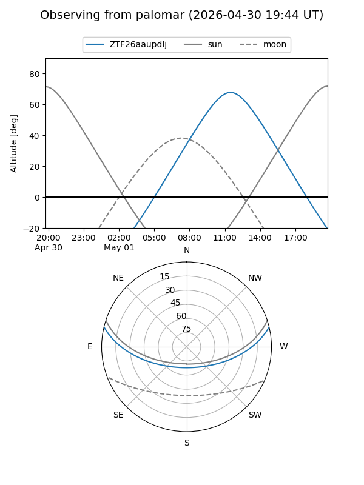

ZTF26aaupdlj
Target ZTF26aaupdlj at 2026-04-30 12:14
Aliases and brokers:
FINK: link
Lasair: link
ALeRCE: link
alt names
ZTF26aaupdlj (ztf,fink_ztf)
Coordinates:
equatorial (ra, dec) = 274.5121,+11.20774
equatorial (HMS+DMS) = 18:18:02.90,+11:12:27.87
galactic (l, b) = (39.2845,+12.43713)
Flags:
Photometry:
last ztfg=17.99
1 ztfg detections
Lightcurve

Visibility


Additional plots